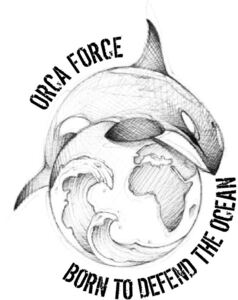

Trade Mark Journal No.2025/032 8 August 2025
WO0000001851886 (16,25,41,42,45)
Office of origin: France
Date of International Registration:2 August 2024
Date of designation in the UK:
2 August 2024

International priority date claimed: 30 May 2024
(France)
(5058631)
- Class 16
- Works of art, decorations and figurines of paper or cardboard, and architects' models; photograph albums; printed coupons; cards; atlases; celestial globes; terrestrial globes; printed teaching activity guides; printed educational materials; pencil boxes; sketch pads; writing or drawing books; pencils; drawing materials; books, magazines [periodicals], newspapers and printed matter; printed matter; stickers; bookbinding material; photographs; stationery; office requisites (except furniture); educational and instructional material; paper; cardboard; boxes of paper or cardboard; posters; albums; books; newspapers; magazines; prospectuses; pamphlets; calendars; writing instruments; engravings (works of art); lithographic works of art; paintings; drawings; drawing instruments.
- Class 25
- Footwear; stocking caps; caps; headwear; ski boots; socks; sports shoes; beach shoes; flip-flops; sandals; shoes; clothing; shirts; polo shirts; T-shirts; hooded sweatshirts; scarves; neckties; gloves; underwear.
- Class 41
- Photography services; organization and conducting of conferences; organization and conducting of colloquiums; publication of books; multimedia publishing; provision of information with respect to education; production of documentaries; film production; electronic publication of books and journals online; reporting agency services; news reporting services; photographic reporting.
- Class 42
- Oceanographic research services; research with respect to ecology; oceanographic exploration services; collection of information relating to oceanography; ecological scientific research; research in the field of environmental protection.
- Class 45
- Animal protection services; investigation services on animal abuse; legal assistance services; online social networking services; political lobbying services; animal adoption services.
Monsieur HOSSEIN-POUR Guyve
Representative: Monsieur PIAT Gilbert @MARK, 16 rue Milton, F-75009 PARIS, FRANCE